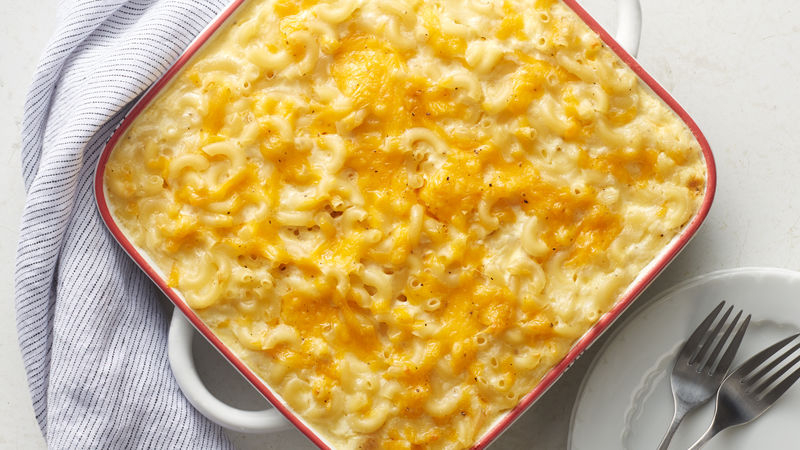

Baked Mac and Cheese

Ingredients
- 1 pound dried elbow pasta
- 1/2 cup unsalted butter
- 1/2 cup all pourpose flour
1 1/2 cups half and half
- 2 cups Cheddar cheese (shredded)
- 1 cup Colby-Jack cheese (shredded)
- 1 cup Muenster cheese (shredded)
- 1 1/2 cups Gruyere cheese (shredded)
- 1/2 cup Mozzarella cheese (shredded)
Cooking Directions
- Preheat oven to 325 degrees F and grease a 3qt (9x13") pan. Set aside.
- Bring a large pot of salted water to a boil.
- When boiling, add dried pasta and cook 1 minute less than the package directs for al dente.
- Drain and drizzle with a little bit of olive oil to keep from sticking.
- Grate cheeeses and toss together to mix. Divide into three piles:
- 50% for the sauce
- 25% for the inner layer
- 25% for the top layer
- Melt butter in a large saucepan over medium heat. Sprinkle in flour and whisk to combine.
- Cook for approximately 1 minute, whisking often (mixture should look like very wet sand).
- Slowly pour in about 2 cups or so of the milk/half and half, while whisking constantly, until smooth.
- Slowly pour in the remaining milk/half and half, while whisking constantly, until combined and smooth.
- Continue to heat over MED heat, whisking very often, until thickened to a very thick consistency.
- Remove from heat and stir in spices and cheese set aside for sauce, stirring to melt and combine.
- In a large mixing bowl, combine drained pasta with cheese sauce, stirring to combine fully.
- Pour half of the pasta mixture into the prepared baking dish.
- Top with cheese set aside for inner layer, then top that with the remaining pasta mixture.
- Sprinkle the top with cheese set aside for top layer.Bake for 15 minutes, until cheese is bubbly and lightly golden brown.
- Bake for 15 minutes, until cheese is bubbly and lightly golden brown.